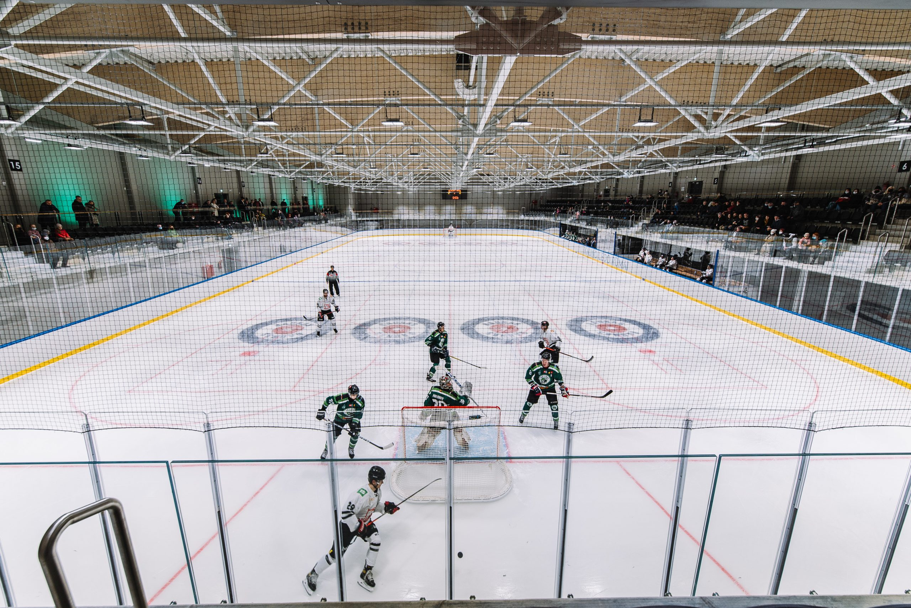
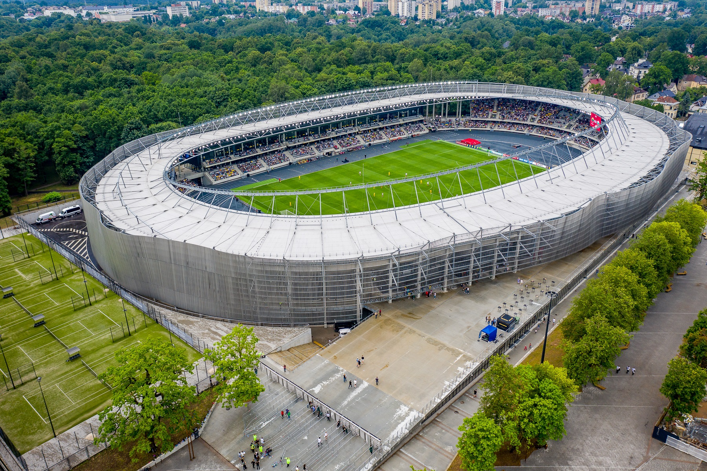
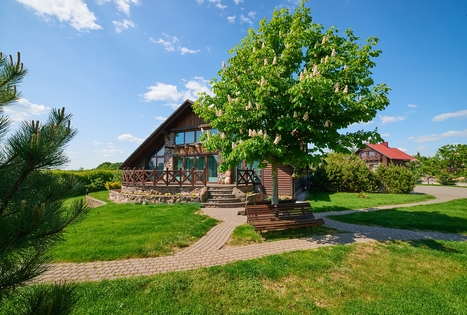

Sports in Kaunas
Kaunas has some great sports complexes all over the city and this is just a selection of a few of them.
Zalgirio Arena Swimming Pool

Get ready to discover various fun water activities at Zalgirio Arena swimming pool! Here you can find 50-meters-long Olympic pool which meets the International Swimming Federation FINA requirements and a smaller and shallower 25-meters-long pool so both adults and children can learn how to swim and develop their skills! Various lessons and group activities, such as aqua aerobics or Swim Fit, take place here so whether you are highly skilled or just beginning to learn how to swim, you will find the activity or lessons that are just for you! There is also a SPA area with warm jacuzzi, musical pool where you can listen to music underwater, bars, water massages and children area. There are 11 different saunas, and you can try them all together with a certified sauna specialist or discover their features on your own. Pool bars and the restaurant will make sure to surprise you with amazing food and drinks and you can also find “Caffeine” café in the hall so you can grab a nice cup of coffee on the way.
Kaunas Ice Palace
Kaunas Ice Palace is the all-in-one activity place for ice skating lovers! Two skating rinks await visitors for mass skating, hockey, curling, figure or synchronized skating matches or training. There are also various themed mass skating events with DJ and colorful lights creating the festive atmosphere. Not interested in winter sports? No worries – Kaunas Ice Palace offers badminton activities for newbies and professionals!
Darius and Girėnas Stadium
Come watch a game of a Lithuanian first division football club in the biggest stadium of all of Lithuania. The stadium is named after two Lithuanian pilots Steponas Darius and Stasys Girėnas, who died in a crash near the end of an attempted non-stop flight from New York to Lithuania.
Homestead Medziotoju sostine

Perfect and very beautiful accommodation place in the center of Lithuania! Here you can also throw big important celebration, conferences or even to try your eye in shooting range with real hunting guns!